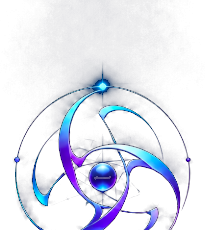
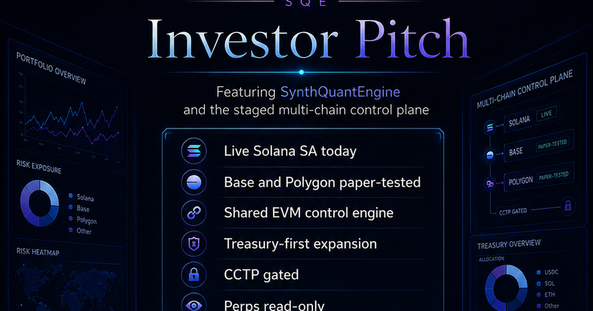
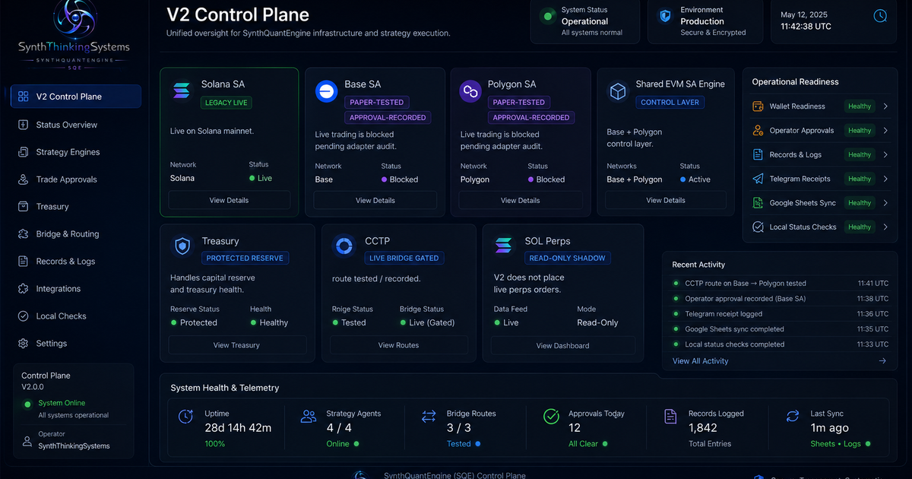
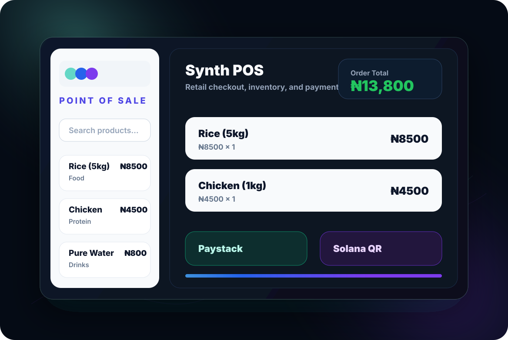

IndigoArtHub
A digital gallery for Osogbo Adire, Batik, Yoruba craftsmanship, artisans, and collectors. This creative platform is separate from the Web3 trading systems.
Visit IndigoArtHub
SynthThinkingSystems
SynthThinkingSystems builds business websites, automation dashboards, creative platforms, and Web3 system tools with clear boundaries, careful workflows, and client-ready presentation.
Formerly Loom Logic, now evolving into the parent company behind IndigoArtHub and SynthQuantEngine.
The public website is separate from SynthQuantEngine. Clients see a professional company presence, while internal trading and automation controls stay private.
Each SynthThinkingSystems system has its own purpose, audience, and risk boundary. That separation keeps client work understandable and keeps internal trading tools away from public-facing product promises.
A digital gallery for Osogbo Adire, Batik, Yoruba craftsmanship, artisans, and collectors. This creative platform is separate from the Web3 trading systems.
Visit IndigoArtHubA terminal-style monitoring lane used for research, read-only analysis, and operational history. It informs SynthQuantEngine without being mixed into client-facing promises, financial advice, or live execution.

Safety-First Control PlaneA safety-first quant/Web3 control plane focused on read-only visibility, approval gates, audit trails, alerting, and human review before any automation. It is presented publicly as a systems capability, not financial advice or client money management.

Retail Operations SystemA point-of-sale lane for product catalogs, cart checkout, order tracking, and payment options such as Paystack and QR-based crypto flows. Built for business operations before public launch.
Client-facing products, internal tools, and trading systems are treated as separate lanes.
Automation is designed around review, logging, and operator control before live actions.
Work is shaped around usable dashboards, workflows, and systems clients can understand.
Trading-system communication avoids profit promises, pressure, and misleading claims.
Share the type of system you want to build, the stage you are in, and the outcome you need. SynthThinkingSystems will use this to understand the right first step.
Use this site as the clean professional front door while SynthQuantEngine remains an internal control system. SynthThinkingSystems was formerly Loom Logic while the brand identity is being finalized. Reach out by email, connect on X, or review the public company profile.